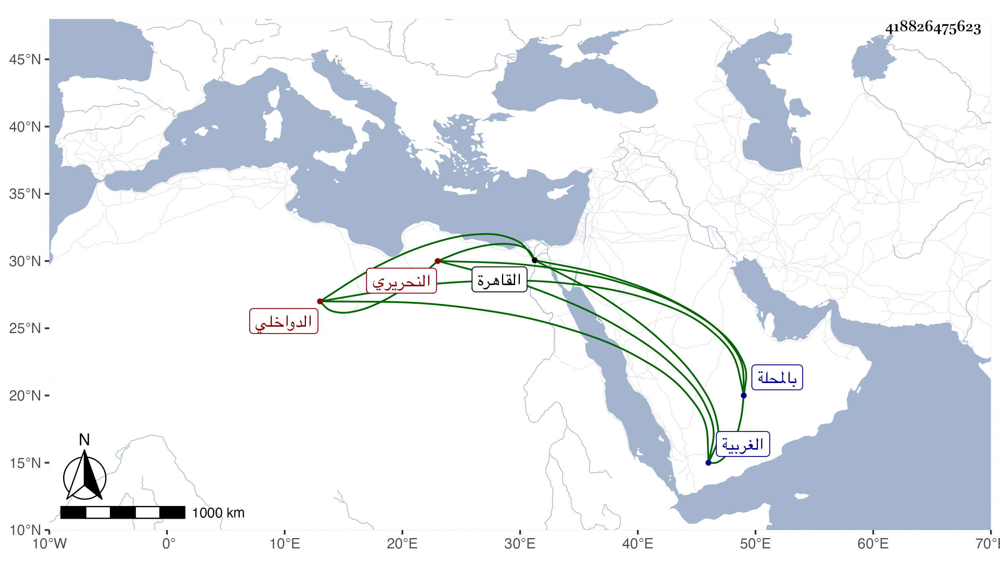

0902Sakhawi.DawLamic.ITO20230111-ara1.EIS1600.418826475623
Biography ID: 418826475623
145
محمد بن أحمد بن محمد بن عبد الله الشمس النحريري ثم الدواخلي نسبة لمحلة الدواخل من الغربية نزيل جامع الغمري وأخو حسن الماضي وأحد أصحاب أبي العباس ممن أقام عنده بجامع أبيه بالمحلة حتى حفظ القرآن ونظم الزبد ثم بجامعه بالقاهرة واشتغل في الفقه والعربية وغيرهما وفهم ولازمني في التقريب للنووي وغيره وسمع على أشياء ، وأقرأ بعض بني شيخه أبي العباس ثم بإشارته أقرأ عمر بن أبي البقاء بن الجيعان ، وتنزل في الجهات بعنايتهم بل صار على عمائر الأشرفية وكان يتضرر من ذلك ، وحج ورزق أولادا . ومات في ربيع الثاني سنة ست وتسعين ونعم الرجل رحمه الله وإيانا .
